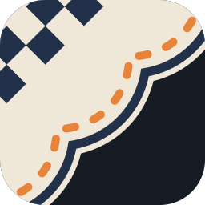

線画
マークした辺に線を引き、辺の形にぴったり沿います。スムーズを使うときも、角をマークすればシャープなまま残せます。
設定
内側オフセット0 mm
マークした辺から内側へ入れる距離（線の外側まで）。0 で辺の縁取りになります。
角の深さ0 mm
マークした角で、さらに内側へ入れる距離。
スムーズ0 mm
線の内側をなめらかにします。外側は辺に沿ったままです。尖らせたい所は角としてマークします。
幅0.5 mm
線の太さ。モデル上のどこでも同じ太さに保ちます。

Pattern Masksドキュメント GitHubマークした辺に線を引き、辺の形にぴったり沿います。スムーズを使うときも、角をマークすればシャープなまま残せます。